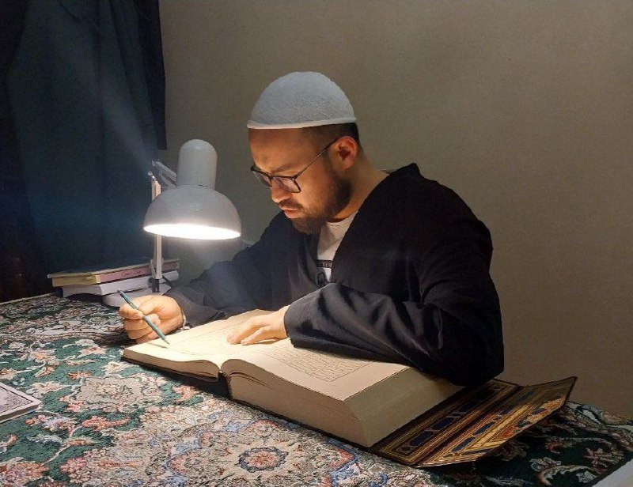
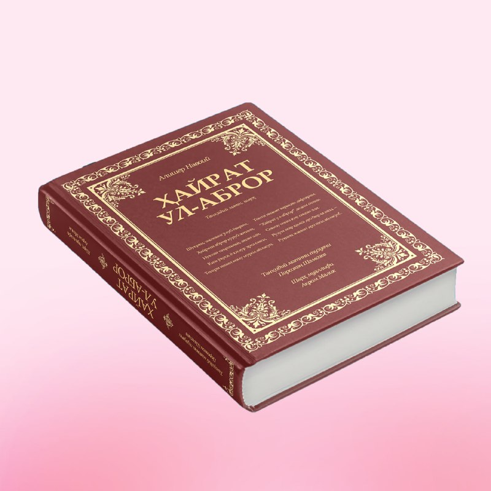

Loyihalar
Ilm, ta’lim va so‘z xizmatida
Mumtoz merosni bugungi o‘quvchiga yetkazish — tahsil, kitob, video va suhbatlar orqali.
Onlayn o‘quv kursi · 2025-yildan
Mumtoz alifbo tahsili
Eski o‘zbek (turkiy) yozuvini o‘qishni o‘rgatadigan, qo‘lyozma va toshbosma matnlarni o‘qish hamda tushunish malakasini hosil qiladigan onlayn kurs. Darslar Zoom orqali, yigitlar va qizlar uchun alohida guruhlarda o‘tadi.
- Tahsil uch sinf davom etadi, har bir sinf uch oydan — jami 9 oy.
- «Ustodi avval», «Hikmatnoma» hamda Sayfi Saroyining «Gulistoni turkiy» asari o‘qitiladi.
- Yuqori sinflarda Leyden universiteti kutubxonasidagi qo‘lyozmalar elektron nusxasidan o‘qiladi.
- Qabul mavsumiy: ariza, suhbat, keyin 1-sinfga qabul. 5-mavsumga 120 dan ortiq ariza tushib, 69 nafar o‘quvchi qabul qilindi.
- Har kuni vazifa topshiriladi; haftalik onlayn darslar o‘gitlar bilan boyitiladi.


YouTube · 2026-yil oktabrdan
Mumtoz suhbatlar
«Hamma baqir-chaqir qilib yugurayotgan bir zamonda sokin va xotirjam suhbat. Shovqinsiz. Tinch. Mulohazakor va bosiq suhbatdoshlar.» Tahsilning yuqori sinf o‘quvchilari Sayfi Saroyi «Gulistoni turkiy» asarining boblari va hikoyatlari mazmunini tahlil qiladilar; har bir son YouTube’da premyera sifatida chiqadi.
- 1-son — muqaddima va 1-bob, 2-son — «Sultonlar siyrati», 3-son — «Faqirlar axloqi».
- Loyiha O‘zbek tili bayramiga tuhfa sifatida boshlangan.
Kitob · audio sharhlar · spektakl
«Hayrat ul-abror» sharhi va «Asliyatdan o‘qiymiz»
Hazrat Alisher Navoiy «Xamsa»sining birinchi dostoni «Hayrat ul-abror»ga birinchi to‘liq sharh: matn, nasriy bayon, izoh va lug‘at. 2024-yil oxirida «Tavfiqnashr»da chop etilgan. Taqdimotda dostonning 10-maqolati — «Ilm» bobi asosida rejissor Farohiddin Mas’ud sahnalashtirgan «Talab egalari» spektakli ko‘rsatildi.
- «Asliyatdan o‘qiymiz» guruhi dostonni qo‘lyozma nusxasidan o‘qiydi va o‘rganadi.
- Bob-bab audio sharhlar: ilmiy maslahatchi — Akrom Malik, ovozlashtirish va montaj — Davlatbek Mashrab.


Risola · 2026
«Mumtoz oila»
Oila qanday bo‘lishi kerak degan savolga mumtoz manbalar asosida javob izlaydigan risola. 2026-yil aprel–sentabr oylarida kanalda 23 bob bo‘lib e’lon qilindi, noyabrda kitob holida chiqdi. Saytda to‘liq, bob-bab o‘qish mumkin.
Mahorat darsi · 2026-yil iyundan
Yozish mahoratidan darslar
Yozishga oid nazariy ma’ruza hamda ishtirokchilar matnlarining tahlili. Turli hajmdagi guruhlar uchun formatlar: umumiy ma’ruza, har bir matn tahlili, yuzma-yuz final suhbati. Yangi mavsum e’lonlari kanalda chiqadi.
Maktub
Savol va takliflar
Muallifga shaxsiy savol, taklif yoki uchrashuvga taklifnoma yo‘llash uchun maxsus bot ishlaydi. Kitob tavsiyalari va yangi nashrlar «Tavfiqnashr» bilan hamkorlikda kanalda e’lon qilinadi.
O‘quvchilar fikri
Tahsil haqida taqrizlar
Assalomu alaykum! Ismim Qalandar Samandarov. 29 yoshdaman. Kasbim oʻqituvchi. Hozirgi vaqtda “Mumtoz alifbo tahsili” 3-sinf oʻquvchisiman. Tarix fani oʻqituvchisi va tadqiqotchisi boʻlganim uchun turkiy alifboni oʻrganyapman. Qolaversa, tariximizga oid aksariyat manbalar turkiy alifboda yozilganligi uchun ulardagi…
Qalandar Samandarov · to‘liq o‘qish
Ассалому алайкум ва раҳматуллоҳи ва баракатуҳу. Мен Усмон Машарип. Ёшим 40 да. Ҳозирда мусофирдаман, айни пайтда Мумтоз алифбо таҳсилининг 2-синф талабасиман. Устозимиз Акром Малик, Аллоҳ рози бўлсин у кишидан, илмлари янада зиёда бўлсин. Шахсан ўзлари ҳар кун вазифа бериб, ҳар ҳафтада бир кун ўзлари берган…
Мен Усмон Машарип · to‘liq o‘qish
Assalomu alaykum. Ismim Muhriddin. Yoshim 26 da. Kasbim oshpaz yordamchisi. Hozirda 2-sinf o‘quvchisiman. O‘z tilini bilmagan odam o‘zga tillarni ham o‘rgana olmaydi degan naqlga amal qilgan holda turkiy alifboni o‘rganishga kirishdim. Niyatim xorijiy tillarni o‘rganish, shuning uchun o‘z tilimni yaxshiroq o‘rganishga…
Muhriddin · to‘liq o‘qish
Assalomu Alaykum! Ismim Davlatbek. Yoshim 24 da. Talabaman. Ustoz yordamida “Mumtoz alifbo tahsili” onlayn o‘quv kursining 3-sinfida Sayfi Saroyi rahmatullohi alayhning “Gulistoni turkiy” kitobining (1553-raqamli qoʻlyozma, Leyden universiteti kutubxonasi) elektron nusxasidan o‘qib kelmoqdamiz. Bundan tashqari…
Davlatbek · to‘liq o‘qish
Assalomu alaykum. Men Ahmadjon Mirixtiyorov, 27 yoshdaman. Ona tili va adabiyot fani o‘qituvchisiman. Mumtoz alifbo tahsiliga qo‘shilganimga ikki oycha bo‘ldi. Aslida arab alifbosini avvaldan bilardim, lekin mumtoz alifboni, ayniqsa, qo‘lyozma shaklidagi matnlarni o‘qish bo‘yicha deyarli tajribam yo‘q edi. Bu kursga…
Ahmadjon Mirixtiyorov · to‘liq o‘qish
Ismim Javohir. 28 yoshdaman. Hozirda talabaman. Turkiy alifbo tahsilining 3-sinfida o‘qiyapman. O‘rganishdan maqsadim ko‘plab ilmiy, axloqiy va ruhiy tarbiya kitoblarining daqiq nuqtalarini fahmlash va ularga amal qilish. Shuningdek, ushbu manbalarni tahlil va tadqiq qilish va xalqimizga ushbu xazinalarni yetkazish…
Javohir · to‘liq o‘qish